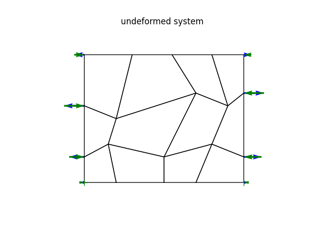
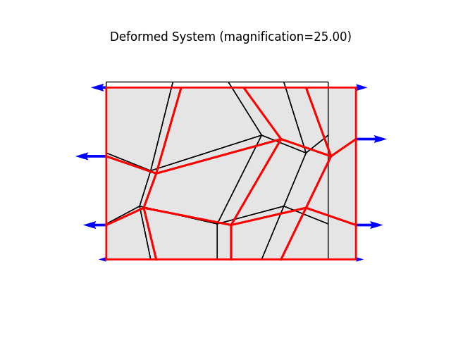
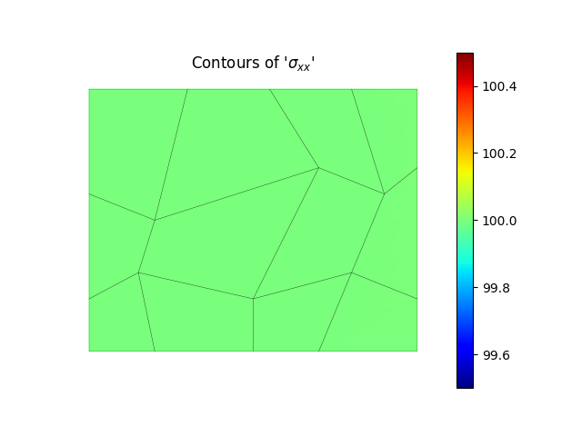
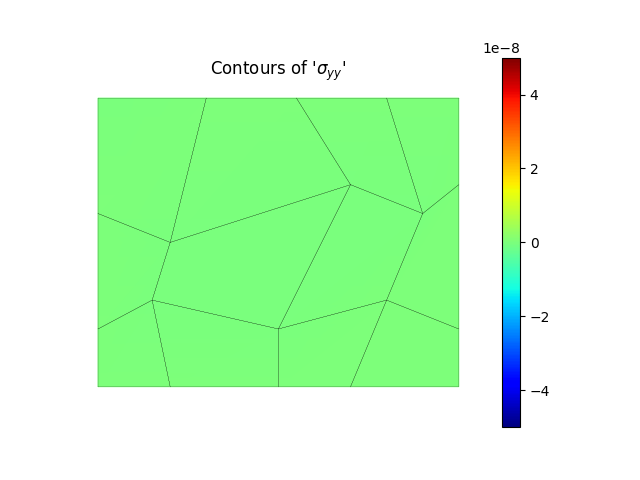
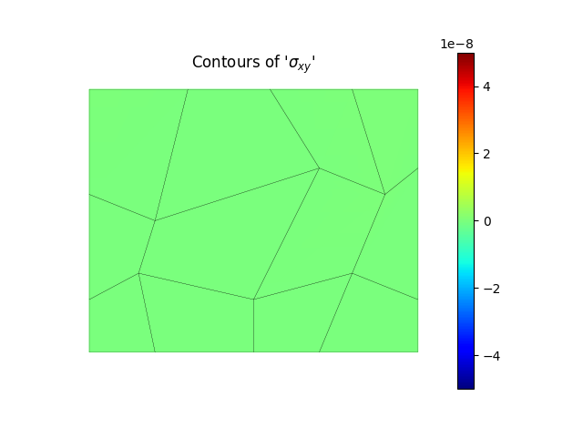

Note
Go to the end to download the full example code.
Patch test for quadrilateral plate elements under in-plane loading
The patch test is an empirical minimum test which every finite element has to pass to ensure convergence with mesh refinement.
It consists of a problem for which a known homogeneous solution exists. For plates, we commonly use a rectangular plate subject to homogeneous edge loading, e.g., constant tension in the x-direction, or constant shear, etc.
The mesh must contain distorted elements and at least one element not attached to any node on the boundary.
Author: Peter Mackenzie-Helnwein
import numpy as np
from femedu.examples import Example
from femedu.domain import System, Node
from femedu.solver import NewtonRaphsonSolver
from femedu.elements.linear import Quad
from femedu.materials import PlaneStress
class ExamplePlate09(Example):
def problem(self):
# ========== setting mesh parameters ==============
N = 8 # number of elements in the mesh
Lx = 100.0 # length of plate in the x-direction
Ly = 80.0 # length of plate in the y-direction
# ========== setting material parameters ==============
params = dict(
E = 20000., # Young's modulus
nu = 0.250, # Poisson's ratio
t = 1.00 # thickness of the plate
)
# ========== setting load parameters ==============
px = 10.0 # uniform load normal to x=const
py = 0.0 # uniform load normal to y=const
pxy = 0.0 # uniform shear load on x=const and y=const
# ========== setting analysis parameters ==============
target_load_level = 1.00 # reference load
max_steps = 2 # number of load steps: 2 -> [0.0, 1.0]
# define a list of target load levels
load_levels = np.linspace(0, target_load_level, max_steps)
#
# ==== Build the system model ====
#
model = System()
model.setSolver(NewtonRaphsonSolver())
# create nodes
nodes = (
Node(0.0*Lx, 0.0*Ly), # nd 0
Node(0.2*Lx, 0.0*Ly), # nd 1
Node(0.5*Lx, 0.0*Ly), # nd 2
Node(0.7*Lx, 0.0*Ly), # nd 3
Node(1.0*Lx, 0.0*Ly), # nd 4
#
Node(0.0*Lx, 0.2*Ly), # nd 5
Node(0.15*Lx,0.3*Ly), # nd 6
Node(0.5*Lx, 0.2*Ly), # nd 7
Node(0.8*Lx, 0.3*Ly), # nd 8
Node(1.0*Lx, 0.2*Ly), # nd 9
#
Node(0.0*Lx, 0.6*Ly), # nd 10
Node(0.2*Lx, 0.5*Ly), # nd 11
Node(0.7*Lx, 0.7*Ly), # nd 12
Node(0.9*Lx, 0.6*Ly), # nd 13
Node(1.0*Lx, 0.7*Ly), # nd 14
#
Node(0.0*Lx, 1.0*Ly), # nd 15
Node(0.3*Lx, 1.0*Ly), # nd 16
Node(0.55*Lx,1.0*Ly), # nd 17
Node(0.8*Lx, 1.0*Ly), # nd 18
Node(1.0*Lx, 1.0*Ly), # nd 19
)
elements = (
Quad(nodes[0],nodes[1],nodes[6],nodes[5],PlaneStress(params)), # elem 0
Quad(nodes[1],nodes[2],nodes[7],nodes[6],PlaneStress(params)), # elem 1
Quad(nodes[2],nodes[3],nodes[8],nodes[7],PlaneStress(params)), # elem 2
Quad(nodes[3],nodes[4],nodes[9],nodes[8],PlaneStress(params)), # elem 3
#
Quad(nodes[5],nodes[6],nodes[11],nodes[10],PlaneStress(params)), # elem 4
Quad(nodes[6],nodes[7],nodes[12],nodes[11],PlaneStress(params)), # elem 5
Quad(nodes[7],nodes[8],nodes[13],nodes[12],PlaneStress(params)), # elem 6
Quad(nodes[8],nodes[9],nodes[14],nodes[13],PlaneStress(params)), # elem 7
#
Quad(nodes[10],nodes[11],nodes[16],nodes[15],PlaneStress(params)), # elem 8
Quad(nodes[11],nodes[12],nodes[17],nodes[16],PlaneStress(params)), # elem 9
Quad(nodes[12],nodes[13],nodes[18],nodes[17],PlaneStress(params)), # elem 10
Quad(nodes[13],nodes[14],nodes[19],nodes[18],PlaneStress(params)), # elem 11
#
)
model.addNode(*nodes)
model.addElement(*elements)
# define support(s)
fix_x = (0,)
fix_y = (0,4)
for idx in fix_x:
nodes[idx].fixDOF('ux') # horizontal support left end
for idx in fix_y:
nodes[idx].fixDOF('uy') # vertical support right end
# ==== complete the reference load ====
# surface loads on the left side
elements[0].setSurfaceLoad(3,px)
elements[4].setSurfaceLoad(3,px)
elements[8].setSurfaceLoad(3,px)
# surface loads on the right side
elements[ 3].setSurfaceLoad(1,px)
elements[ 7].setSurfaceLoad(1,px)
elements[11].setSurfaceLoad(1,px)
# these are only nodal forces as part of the reference load
# .. load only the upper node
model.plot(factor=0., title="undeformed system", show_bc=1)
model.setLoadFactor(0.0)
model.solve()
# for k in range(25):
# name = f"plate08_mode{k:2d}.png"
# model.plotBucklingMode(mode=k,filename=name,factor=25)
model.setLoadFactor(10.0)
model.solve()
model.solver.showKt()
model.report()
model.plot(factor=25.)
model.valuePlot('sxx', show_mesh=1)
model.valuePlot('syy', show_mesh=1)
model.valuePlot('sxy', show_mesh=1)
Run the example by creating an instance of the problem and executing it by calling Example.run()
if __name__ == "__main__":
ex = ExamplePlate09()
ex.run()
- 

- 
- 
- 
- 
+
+
System Analysis Report
=======================
Nodes:
---------------------
Node_675:
x: [0.000 0.000]
fix: ['ux', 'uy']
u: [0.000 0.000]
Node_676:
x: [20.000 0.000]
u: [0.100 -0.000]
Node_677:
x: [50.000 0.000]
u: [0.250 -0.000]
Node_678:
x: [70.000 0.000]
u: [0.350 -0.000]
Node_679:
x: [100.000 0.000]
fix: ['uy']
u: [0.500 0.000]
Node_680:
x: [0.000 16.000]
u: [-0.000 -0.020]
Node_681:
x: [15.000 24.000]
u: [0.075 -0.030]
Node_682:
x: [50.000 16.000]
u: [0.250 -0.020]
Node_683:
x: [80.000 24.000]
u: [0.400 -0.030]
Node_684:
x: [100.000 16.000]
u: [0.500 -0.020]
Node_685:
x: [0.000 48.000]
u: [0.000 -0.060]
Node_686:
x: [20.000 40.000]
u: [0.100 -0.050]
Node_687:
x: [70.000 56.000]
u: [0.350 -0.070]
Node_688:
x: [90.000 48.000]
u: [0.450 -0.060]
Node_689:
x: [100.000 56.000]
u: [0.500 -0.070]
Node_690:
x: [0.000 80.000]
u: [0.000 -0.100]
Node_691:
x: [30.000 80.000]
u: [0.150 -0.100]
Node_692:
x: [55.000 80.000]
u: [0.275 -0.100]
Node_693:
x: [80.000 80.000]
u: [0.400 -0.100]
Node_694:
x: [100.000 80.000]
u: [0.500 -0.100]
Elements:
---------------------
Quad_873: nodes ( Node_675 Node_676 Node_681 Node_680 )
material: list
strain (0): xx=5.000e-03 yy=-1.250e-03 xy=-1.046e-16 zz=-9.375e-04
stress (0): xx=1.000e+02 yy=2.367e-12 xy=-8.367e-13 zz=0.000e+00
strain (1): xx=5.000e-03 yy=-1.250e-03 xy=4.146e-17 zz=-9.375e-04
stress (1): xx=1.000e+02 yy=-1.185e-12 xy=3.317e-13 zz=0.000e+00
strain (2): xx=5.000e-03 yy=-1.250e-03 xy=-1.695e-16 zz=-9.375e-04
stress (2): xx=1.000e+02 yy=2.367e-12 xy=-1.356e-12 zz=0.000e+00
strain (3): xx=5.000e-03 yy=-1.250e-03 xy=1.009e-16 zz=-9.375e-04
stress (3): xx=1.000e+02 yy=8.527e-16 xy=8.073e-13 zz=0.000e+00
Quad_874: nodes ( Node_676 Node_677 Node_682 Node_681 )
material: list
strain (0): xx=5.000e-03 yy=-1.250e-03 xy=7.529e-17 zz=-9.375e-04
stress (0): xx=1.000e+02 yy=2.369e-12 xy=6.023e-13 zz=0.000e+00
strain (1): xx=5.000e-03 yy=-1.250e-03 xy=-1.356e-16 zz=-9.375e-04
stress (1): xx=1.000e+02 yy=1.185e-12 xy=-1.085e-12 zz=0.000e+00
strain (2): xx=5.000e-03 yy=-1.250e-03 xy=2.377e-17 zz=-9.375e-04
stress (2): xx=1.000e+02 yy=-3.554e-12 xy=1.901e-13 zz=0.000e+00
strain (3): xx=5.000e-03 yy=-1.250e-03 xy=3.897e-17 zz=-9.375e-04
stress (3): xx=1.000e+02 yy=1.185e-12 xy=3.118e-13 zz=0.000e+00
Quad_875: nodes ( Node_677 Node_678 Node_683 Node_682 )
material: list
strain (0): xx=5.000e-03 yy=-1.250e-03 xy=3.344e-16 zz=-9.375e-04
stress (0): xx=1.000e+02 yy=8.527e-16 xy=2.675e-12 zz=0.000e+00
strain (1): xx=5.000e-03 yy=-1.250e-03 xy=2.241e-16 zz=-9.375e-04
stress (1): xx=1.000e+02 yy=2.368e-12 xy=1.793e-12 zz=0.000e+00
strain (2): xx=5.000e-03 yy=-1.250e-03 xy=4.129e-16 zz=-9.375e-04
stress (2): xx=1.000e+02 yy=1.185e-12 xy=3.304e-12 zz=0.000e+00
strain (3): xx=5.000e-03 yy=-1.250e-03 xy=-7.355e-17 zz=-9.375e-04
stress (3): xx=1.000e+02 yy=3.551e-12 xy=-5.884e-13 zz=0.000e+00
Quad_876: nodes ( Node_678 Node_679 Node_684 Node_683 )
material: list
strain (0): xx=5.000e-03 yy=-1.250e-03 xy=-3.066e-16 zz=-9.375e-04
stress (0): xx=1.000e+02 yy=-5.923e-12 xy=-2.452e-12 zz=0.000e+00
strain (1): xx=5.000e-03 yy=-1.250e-03 xy=-1.168e-16 zz=-9.375e-04
stress (1): xx=1.000e+02 yy=-2.369e-12 xy=-9.348e-13 zz=0.000e+00
strain (2): xx=5.000e-03 yy=-1.250e-03 xy=9.823e-17 zz=-9.375e-04
stress (2): xx=1.000e+02 yy=-3.316e-16 xy=7.859e-13 zz=0.000e+00
strain (3): xx=5.000e-03 yy=-1.250e-03 xy=2.679e-16 zz=-9.375e-04
stress (3): xx=1.000e+02 yy=2.367e-12 xy=2.143e-12 zz=0.000e+00
Quad_877: nodes ( Node_680 Node_681 Node_686 Node_685 )
material: list
strain (0): xx=5.000e-03 yy=-1.250e-03 xy=2.026e-17 zz=-9.375e-04
stress (0): xx=1.000e+02 yy=1.183e-12 xy=1.621e-13 zz=0.000e+00
strain (1): xx=5.000e-03 yy=-1.250e-03 xy=-4.235e-17 zz=-9.375e-04
stress (1): xx=1.000e+02 yy=5.921e-12 xy=-3.388e-13 zz=0.000e+00
strain (2): xx=5.000e-03 yy=-1.250e-03 xy=-6.165e-18 zz=-9.375e-04
stress (2): xx=1.000e+02 yy=1.185e-12 xy=-4.932e-14 zz=0.000e+00
strain (3): xx=5.000e-03 yy=-1.250e-03 xy=-1.247e-16 zz=-9.375e-04
stress (3): xx=1.000e+02 yy=8.291e-12 xy=-9.975e-13 zz=0.000e+00
Quad_878: nodes ( Node_681 Node_682 Node_687 Node_686 )
material: list
strain (0): xx=5.000e-03 yy=-1.250e-03 xy=1.100e-16 zz=-9.375e-04
stress (0): xx=1.000e+02 yy=2.367e-12 xy=8.800e-13 zz=0.000e+00
strain (1): xx=5.000e-03 yy=-1.250e-03 xy=-3.472e-16 zz=-9.375e-04
stress (1): xx=1.000e+02 yy=-1.185e-12 xy=-2.777e-12 zz=0.000e+00
strain (2): xx=5.000e-03 yy=-1.250e-03 xy=1.983e-16 zz=-9.375e-04
stress (2): xx=1.000e+02 yy=-2.369e-12 xy=1.586e-12 zz=0.000e+00
strain (3): xx=5.000e-03 yy=-1.250e-03 xy=-2.046e-16 zz=-9.375e-04
stress (3): xx=1.000e+02 yy=3.551e-12 xy=-1.637e-12 zz=0.000e+00
Quad_879: nodes ( Node_682 Node_683 Node_688 Node_687 )
material: list
strain (0): xx=5.000e-03 yy=-1.250e-03 xy=8.123e-17 zz=-9.375e-04
stress (0): xx=1.000e+02 yy=3.554e-12 xy=6.498e-13 zz=0.000e+00
strain (1): xx=5.000e-03 yy=-1.250e-03 xy=-3.826e-17 zz=-9.375e-04
stress (1): xx=1.000e+02 yy=2.369e-12 xy=-3.061e-13 zz=0.000e+00
strain (2): xx=5.000e-03 yy=-1.250e-03 xy=-3.527e-16 zz=-9.375e-04
stress (2): xx=1.000e+02 yy=-2.369e-12 xy=-2.821e-12 zz=0.000e+00
strain (3): xx=5.000e-03 yy=-1.250e-03 xy=1.849e-16 zz=-9.375e-04
stress (3): xx=1.000e+02 yy=7.105e-12 xy=1.479e-12 zz=0.000e+00
Quad_880: nodes ( Node_683 Node_684 Node_689 Node_688 )
material: list
strain (0): xx=5.000e-03 yy=-1.250e-03 xy=-7.082e-17 zz=-9.375e-04
stress (0): xx=1.000e+02 yy=-1.183e-12 xy=-5.666e-13 zz=0.000e+00
strain (1): xx=5.000e-03 yy=-1.250e-03 xy=-2.260e-16 zz=-9.375e-04
stress (1): xx=1.000e+02 yy=-2.369e-12 xy=-1.808e-12 zz=0.000e+00
strain (2): xx=5.000e-03 yy=-1.250e-03 xy=-9.509e-16 zz=-9.375e-04
stress (2): xx=1.000e+02 yy=-1.303e-11 xy=-7.607e-12 zz=0.000e+00
strain (3): xx=5.000e-03 yy=-1.250e-03 xy=4.363e-16 zz=-9.375e-04
stress (3): xx=1.000e+02 yy=-3.553e-12 xy=3.490e-12 zz=0.000e+00
Quad_881: nodes ( Node_685 Node_686 Node_691 Node_690 )
material: list
strain (0): xx=5.000e-03 yy=-1.250e-03 xy=1.015e-17 zz=-9.375e-04
stress (0): xx=1.000e+02 yy=5.921e-12 xy=8.120e-14 zz=0.000e+00
strain (1): xx=5.000e-03 yy=-1.250e-03 xy=7.829e-17 zz=-9.375e-04
stress (1): xx=1.000e+02 yy=3.551e-12 xy=6.263e-13 zz=0.000e+00
strain (2): xx=5.000e-03 yy=-1.250e-03 xy=1.438e-16 zz=-9.375e-04
stress (2): xx=1.000e+02 yy=3.551e-12 xy=1.150e-12 zz=0.000e+00
strain (3): xx=5.000e-03 yy=-1.250e-03 xy=5.399e-17 zz=-9.375e-04
stress (3): xx=1.000e+02 yy=8.527e-16 xy=4.319e-13 zz=0.000e+00
Quad_882: nodes ( Node_686 Node_687 Node_692 Node_691 )
material: list
strain (0): xx=5.000e-03 yy=-1.250e-03 xy=1.955e-17 zz=-9.375e-04
stress (0): xx=1.000e+02 yy=-4.737e-12 xy=1.564e-13 zz=0.000e+00
strain (1): xx=5.000e-03 yy=-1.250e-03 xy=1.000e-16 zz=-9.375e-04
stress (1): xx=1.000e+02 yy=-8.289e-12 xy=8.001e-13 zz=0.000e+00
strain (2): xx=5.000e-03 yy=-1.250e-03 xy=-3.603e-16 zz=-9.375e-04
stress (2): xx=1.000e+02 yy=3.551e-12 xy=-2.883e-12 zz=0.000e+00
strain (3): xx=5.000e-03 yy=-1.250e-03 xy=-3.240e-16 zz=-9.375e-04
stress (3): xx=1.000e+02 yy=-4.738e-12 xy=-2.592e-12 zz=0.000e+00
Quad_883: nodes ( Node_687 Node_688 Node_693 Node_692 )
material: list
strain (0): xx=5.000e-03 yy=-1.250e-03 xy=1.873e-16 zz=-9.375e-04
stress (0): xx=1.000e+02 yy=-3.554e-12 xy=1.498e-12 zz=0.000e+00
strain (1): xx=5.000e-03 yy=-1.250e-03 xy=-2.483e-17 zz=-9.375e-04
stress (1): xx=1.000e+02 yy=3.551e-12 xy=-1.986e-13 zz=0.000e+00
strain (2): xx=5.000e-03 yy=-1.250e-03 xy=2.034e-17 zz=-9.375e-04
stress (2): xx=1.000e+02 yy=-2.368e-12 xy=1.627e-13 zz=0.000e+00
strain (3): xx=5.000e-03 yy=-1.250e-03 xy=2.146e-16 zz=-9.375e-04
stress (3): xx=1.000e+02 yy=9.472e-12 xy=1.717e-12 zz=0.000e+00
Quad_884: nodes ( Node_688 Node_689 Node_694 Node_693 )
material: list
strain (0): xx=5.000e-03 yy=-1.250e-03 xy=-1.364e-16 zz=-9.375e-04
stress (0): xx=1.000e+02 yy=1.183e-12 xy=-1.091e-12 zz=0.000e+00
strain (1): xx=5.000e-03 yy=-1.250e-03 xy=-1.167e-16 zz=-9.375e-04
stress (1): xx=1.000e+02 yy=4.738e-12 xy=-9.338e-13 zz=0.000e+00
strain (2): xx=5.000e-03 yy=-1.250e-03 xy=2.250e-16 zz=-9.375e-04
stress (2): xx=1.000e+02 yy=9.474e-12 xy=1.800e-12 zz=0.000e+00
strain (3): xx=5.000e-03 yy=-1.250e-03 xy=7.021e-17 zz=-9.375e-04
stress (3): xx=1.000e+02 yy=1.184e-12 xy=5.617e-13 zz=0.000e+00
Total running time of the script: (0 minutes 0.633 seconds)